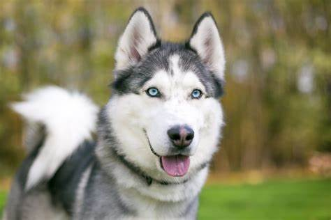
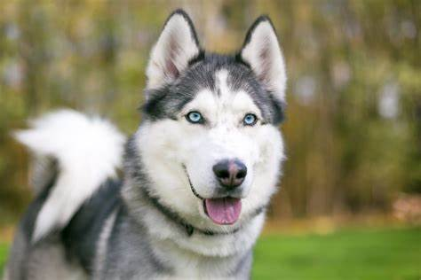

Husky siberiano
El husky siberiano es una raza de perro de trabajo originaria del norte de Siberia en Rusia. Este perro fue creado por la tribu Chukchi como perro de trabajo para tirar de los trineos a través de largas distancias durante sus partidas de caza, sirviendo así como vehículo de transporte rápido para las presas en la vuelta al poblado. Al contrario de lo que narra la creencia popular, esta raza jamás tuvo una función de perro pastor, ya que el pueblo Chukchi, originalmente, no mantenía ganado propio. Debido a las condiciones climáticas de sus tierras natales, su pelaje no solo les servía como protección propia ante tan bajas temperaturas, sino que también les brindó un lugar dentro de las tiendas de la tribu, ayudando a mantener calientes a los niños durante la noche. Por ello, el perro Chukchi (como era conocido originalmente), era muy apreciado también (e incluso gratamente reconocido por otras tribus), por su aportación al núcleo familiar, a pesar de ser realmente un perro de trabajo activo. Desde su importación a tierras estadounidenses a principios del siglo xx, podemos encontrar esta raza en cualquier parte del mundo.
 

Diferencia entre macho y embra
- Peso y altura: el macho es más alto y más pesado que la hembra, dado que la hembra es más pequeña en tamaño
- Pelaje: el macho tiene pelo más largo a diferencia de la hembra que tiene el pelaje más corto
Cuidados para los Husky
- Alimentación adecuada para la raza
- No es recomendable en lugares con altas temperaturas por su pelaje
- Es un animal sumamente activo por lo cual necesita actividades diarias para su salud